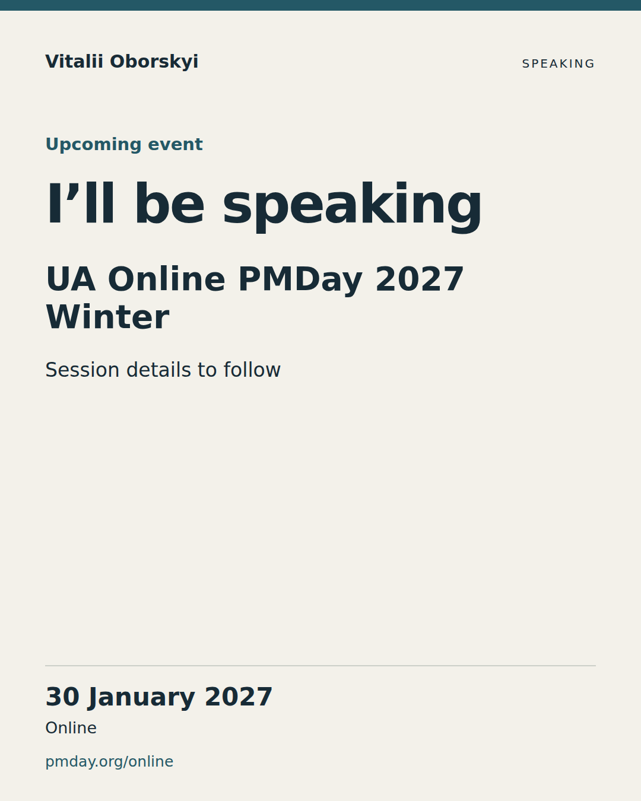

Draft preparation kit. Author, editorial, visual and rights acceptance remain separate. Nothing has been posted or scheduled.
Calendar export · Source manifest · Review checklist
2026-10-20T07:00:00.000Z · authored
Confirm participation, date, online format and registration.
Card preview · PNG · PDF

I’ll be speaking at UA Online PMDay 2027 Winter on 30 January. My work explores two connected shifts: how AI changes software delivery, and what happens when the products we build begin to exercise judgment themselves. Both raise questions about how we organize work, verify outcomes and take responsibility for decisions. I’m glad to be returning to the PMDay community. I’ll share the session title and details once confirmed. 📅 30 January 2027 🌐 Online Event details and registration: https://pmday.org/online #PMDay #SoftwareDelivery #AIGovernance
2026-12-08T08:00:00.000Z · planned
Explore one delivery-system question; invite questions without inventing the session scope.
Awaiting authored copy and review.
2027-01-12T08:00:00.000Z · planned
Announce the confirmed session title, audience and three concrete questions after approval.
Awaiting authored copy and review.
2027-01-21T08:00:00.000Z · planned
Share one reviewed slide from the actual January deck with a useful thesis.
Awaiting authored copy and review.
2027-01-28T08:00:00.000Z · planned
Final reminder with the confirmed programme, time and timezone.
Awaiting authored copy and review.
2027-02-01T08:00:00.000Z · planned
Reflect on actual audience questions and link only materials/recordings that exist.
Awaiting authored copy and review.